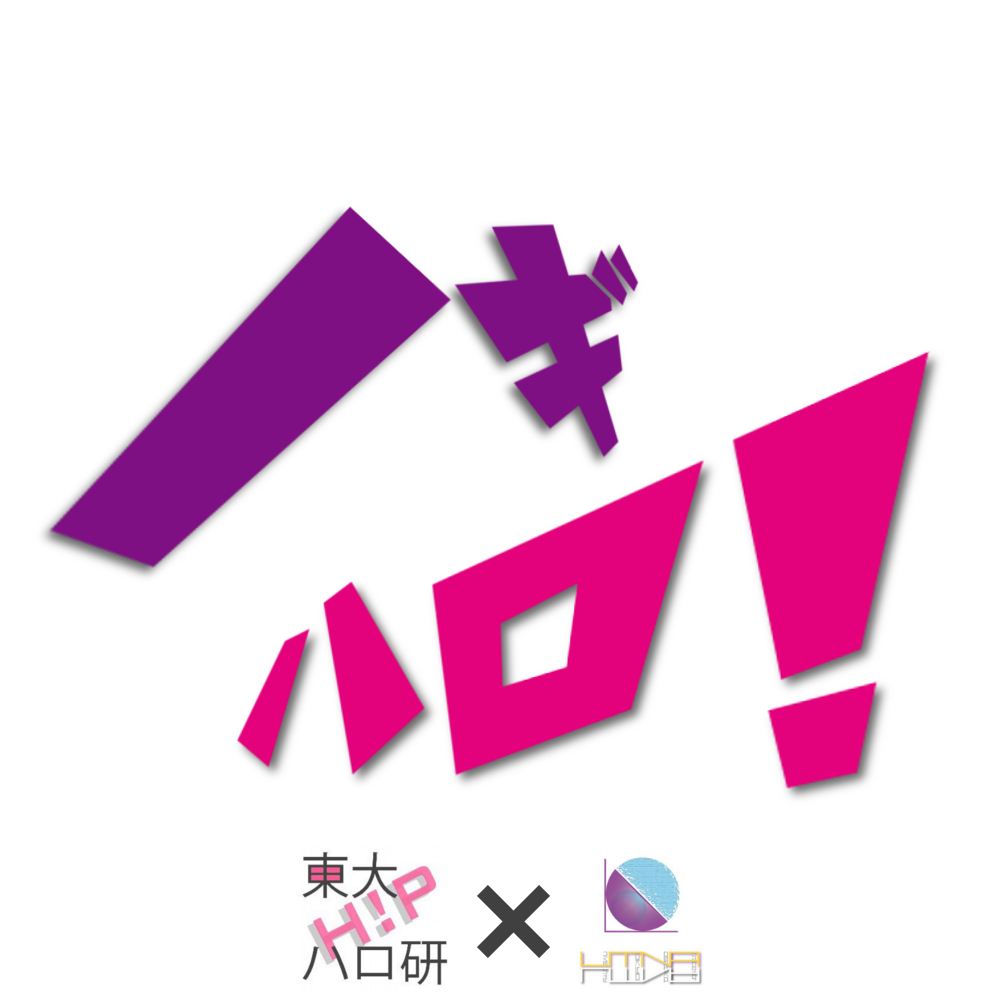
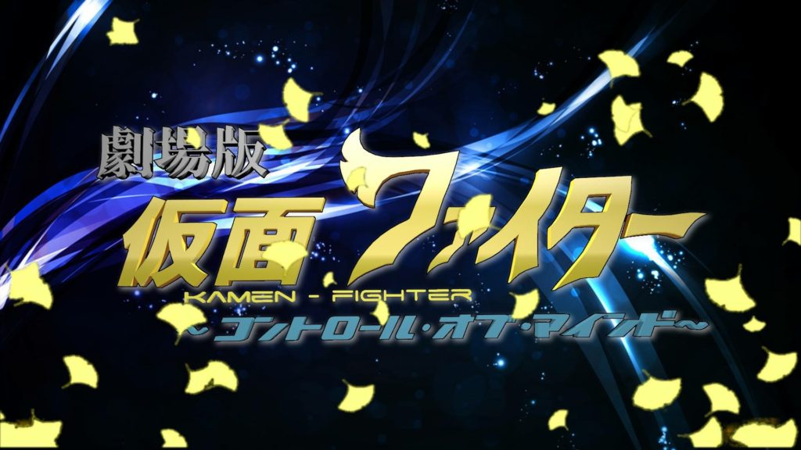
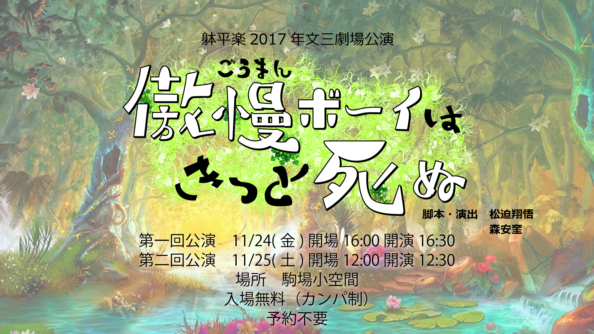

Productions
VR
ノギハロ！

＜時期＞2016年5月,2016年11月
＜担当＞企画代表・製作
＜企画概要＞
東大ハロプロ研究会と東京大学乃木坂46同好会のコラボ団体として結成し、文化祭で無料展示した。「アイドル×VR」をメインコンセプトに、オリジナルVRコンテンツを作成した。
2016年5月の五月祭では現役東大生によるコピーダンスグループ「東大Honeypot」をRichoTHETASで撮影した360度動画の視聴体験を展示。また、実際のアイドルのMVを複数三次元空間に並べて視聴する体験を3DCGソフトBlenderで制作し、GearVR用に書き出し展示した。
2016年11月の駒場祭では、体験者がボタン選択できるインタラクティブなVR体験を目指し、Unityでのアプリケーション制作を開始した。「モーニング娘。」「℃-ute」「乃木坂46」の歴代の全PVが見られる「四次元☆アイドル図鑑」と、東大Honeypot(Z)の実際のライブ映像を360度動画として楽しめる「四次元☆東大Honeypot(Z) -LIVE-」を制作し展示した。
足湯VR

＜時期＞2017年5月
＜担当＞VRコンテンツ制作リーダー
＜企画概要＞
東大VRサークル UT-virtualと東大温泉サークル OKR（おける）のコラボ企画として展示。来場者には長野県の渋温泉の源泉足湯につかりながら、現地の様々な風景をVR機器で楽しむという体験をしてもらった。
開発に伴い、長野県の渋温泉現地でGear360を使用して全天球動画を撮影。来場者が好きなコンテンツを選べるよう、Unityでメニュー画面やインタラクティブな体験のシーンを作成し、GearVRで見られるように書き出した。
by Yutty! 温泉に行きたくなるメディア
演劇
劇場版仮面ファイター ～コントロール・オブ・マインド～

＜担当＞監督・脚本・演出
＜開演日＞2015年11月22日
＜企画概要＞
東大エンターテインメント団体 躰平楽（たいへいらく）の駒場祭文三劇場企画第一弾。「子供から年配の方まで楽しめる演劇」をコンセプトに、バック転などのアクロバットを取り入れたコメディヒーローショーの監督・脚本を務めた。
主役のヒーロースーツを完全に自作した。
傲慢ボーイはきっと死ぬ

＜担当＞監督・脚本・演出＜開演日＞2017年11月24日,25日
＜企画概要＞
躰平楽（たいへいらく）の駒場祭文三劇場企画第三弾。（第二弾「名探偵アリスと謎のサーカス団」はこちら）
森安奎と共同で脚本・演出を行った。これまで同様のアクロバットのみならず、今回はオリジナル楽曲によるミュージカルやプロジェクションマッピングも取り入れた。